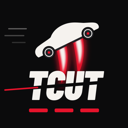

TRAFFIC CUTTER
TCUT · iPhone
Trafikte makas at, üstünden uç.
İstanbul, Ankara, İzmir ve Antalya'nın ana yollarında ve Türkiye Turu'nun il il yollarında yoğun trafiğin arasından geç. Yol tıkanınca iticilerle trafiğin üstünden zıpla, gösterge dolunca bulutların üstündeki gökyüzü koşusuna çık.